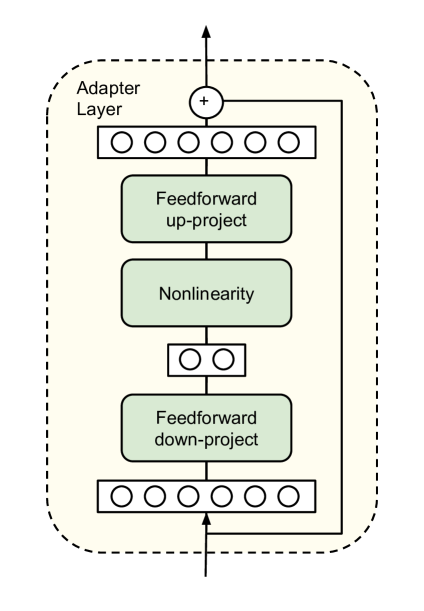

import torch
import torch.nn as nn
import torch.nn.functional as F
class LoRALayer(nn.Module):
"""LoRA 层：对线性层进行低秩适配"""
def __init__(
self,
in_features: int,
out_features: int,
rank: int = 4,
alpha: float = 1.0,
):
super().__init__()
self.rank = rank
self.alpha = alpha
self.scaling = alpha / rank
# 低秩矩阵 A 和 B
# A: 下投影，初始化为高斯分布
self.lora_A = nn.Parameter(torch.randn(in_features, rank) * 0.01)
# B: 上投影，初始化为零（确保训练开始时 ΔW = 0）
self.lora_B = nn.Parameter(torch.zeros(rank, out_features))
def forward(self, x: torch.Tensor) -> torch.Tensor:
"""计算 LoRA 的增量输出"""
# x: [batch, seq_len, in_features]
# 计算 x @ A @ B，得到 [batch, seq_len, out_features]
return (x @ self.lora_A @ self.lora_B) * self.scaling
class LinearWithLoRA(nn.Module):
"""带 LoRA 的线性层：冻结原始权重，只训练 LoRA 参数"""
def __init__(
self,
linear: nn.Linear,
rank: int = 4,
alpha: float = 1.0,
):
super().__init__()
self.linear = linear
self.lora = LoRALayer(
linear.in_features,
linear.out_features,
rank=rank,
alpha=alpha,
)
# 冻结原始权重
for param in self.linear.parameters():
param.requires_grad = False
def forward(self, x: torch.Tensor) -> torch.Tensor:
# 原始输出 + LoRA 增量
return self.linear(x) + self.lora(x)
def merge_weights(self):
"""将 LoRA 权重合并到原始权重中（用于推理优化）"""
with torch.no_grad():
# W' = W + scaling * B @ A
self.linear.weight.data += (
self.lora.scaling *
self.lora.lora_B.T @ self.lora.lora_A.T
)
# 合并后可以删除 LoRA 参数
return self.linear第30章：高效微调技术的演进
From Full Fine-tuning to LoRA: The Art of Adapting Giants with Minimal Parameters
NLP
Deep Learning
LLM
PEFT
LoRA
Adapter
Fine-tuning
当模型参数量从亿级跃升到千亿级，全参数微调成为不可承受之重——一个70B模型的微调需要超过500GB显存。2019年起，研究者探索出多条参数高效微调（PEFT）路线：Adapter在Transformer层中插入小型瓶颈模块；Prefix/Prompt Tuning在输入端学习软提示；而2021年的LoRA另辟蹊径，通过低秩矩阵分解实现了训练参数减少10000倍、显存降低3倍、推理零额外延迟的完美平衡。本章系统梳理PEFT方法的演进脉络，从Adapter的插入式设计到LoRA的低秩分解，从QLoRA的4-bit量化到DoRA的权重分解，揭示为什么’少就是多’在大模型时代成为可能。
核心问题：当大语言模型的参数量达到数百亿甚至数千亿时，如何用极少的可训练参数（<1%）实现与全参数微调相当的性能？不同PEFT方法的设计哲学和适用场景有何差异？
历史坐标：2019–2024 | Adapter (Houlsby et al., 2019), Prefix Tuning (Li & Liang, 2021), LoRA (Hu et al., 2021), QLoRA (Dettmers et al., 2023), DoRA (Liu et al., 2024) | 从全参数微调到参数高效适配的范式转变
Tip本章参考来源
0.1 论文
- Houlsby et al. (2019) “Parameter-Efficient Transfer Learning for NLP” (arXiv:1902.00751) — 参考了 Section 3 的 Adapter 架构设计、Figure 2（Adapter 模块结构）、Table 1（GLUE 实验结果）；从论文提取了1张架构图
- Li & Liang (2021) “Prefix-Tuning: Optimizing Continuous Prompts for Generation” (arXiv:2101.00190) — 参考了 Section 2-3 的 Prefix Tuning 方法、与 Fine-tuning 的对比实验
- Lester et al. (2021) “The Power of Scale for Parameter-Efficient Prompt Tuning” (arXiv:2104.08691) — 参考了 Prompt Tuning 的设计和规模效应分析
- Hu et al. (2021) “LoRA: Low-Rank Adaptation of Large Language Models” (arXiv:2106.09685) — 参考了 Section 2-4 的低秩分解方法、Figure 1（LoRA 架构）、Section 7 的 rank 分析；本章核心技术参考，从论文提取了2张图
- Dettmers et al. (2023) “QLoRA: Efficient Finetuning of Quantized LLMs” (arXiv:2305.14314) — 参考了 Section 3 的 NF4 量化、Double Quantization、Paged Optimizers
- Liu et al. (2024) “DoRA: Weight-Decomposed Low-Rank Adaptation” (arXiv:2402.09353) — 参考了权重分解分析和 DoRA 设计（ICML 2024 Oral）
- Hayou et al. (2024) “LoRA+: Efficient Low Rank Adaptation of Large Models” (arXiv:2402.12354) — 参考了 A 和 B 矩阵不同学习率的设计
0.2 课程
- Stanford CS224N Lecture 11: Efficient Adaptation (Winter 2024) — 参考了 PEFT 方法的教学组织框架
0.3 代码资源
- microsoft/LoRA — LoRA 官方实现
- huggingface/peft — Hugging Face PEFT 库
- artidoro/qlora — QLoRA 官方实现
1 从上一章说起
上一章我们见证了开源大模型的蓬勃发展——从 LLaMA 开创先河，到 LLaMA 2/3 的持续进化，再到 Mistral、Qwen、DeepSeek 等模型的多极化竞争。开源生态的繁荣让每个人都能获得与 GPT-3.5 相当甚至更强的模型。但获得模型只是第一步，真正的挑战在于如何让这些通用模型适配你的具体任务。
传统的方法是全参数微调（Full Fine-tuning）：加载预训练模型，在下游任务的数据上继续训练，更新所有参数。这种方法在 BERT 时代（1.1亿参数）完全可行——任何一张消费级 GPU 都能装下模型和梯度。但当模型规模跃升到 GPT-3 级别（1750亿参数），情况发生了质变。让我们做一个简单的算术：
一个 175B 参数的模型：
- 模型参数：\(175 \times 10^9 \times 2 \text{ bytes (FP16)} = 350 \text{ GB}\)
- 梯度：与参数同等大小，\(350 \text{ GB}\)
- 优化器状态（Adam）：参数的2倍（一阶和二阶动量），\(700 \text{ GB}\)
- 激活值：取决于 batch size 和序列长度，通常数百 GB
总计：全参数微调 GPT-3 需要约 1.5 TB 显存——这大约需要 20 张 80GB 的 A100 GPU。即使是”小”一点的 LLaMA 70B，全参数微调也需要超过 500GB 显存。对于大多数研究者和开发者来说，这是不可承受之重。
更糟糕的是，全参数微调还有一个实际问题：每个下游任务都需要保存一份完整的模型副本。如果你有 10 个任务，就需要存储 10 份 175B 参数——这是 3.5 TB 的磁盘空间。部署时，每个任务都需要单独加载一个完整模型，无法共享计算资源。
💡 本章核心洞察：参数高效微调（Parameter-Efficient Fine-Tuning, PEFT）的核心思想是——预训练模型已经学到了强大的通用表示，适配下游任务不需要改变所有参数，只需要在关键位置做小幅调整。不同的 PEFT 方法探索了不同的”关键位置”：Adapter 在层间插入小型瓶颈模块，Prefix/Prompt Tuning 在输入端添加可学习的软提示，而 LoRA 则发现权重更新本身具有低秩结构，可以用两个小矩阵的乘积来近似。这些方法将可训练参数从 100% 降到 0.01%–1%，却能达到接近全参数微调的效果。
2 问题的本质是什么？
2.1 重新审视”微调”
让我们退后一步，思考微调究竟在做什么。预训练后，模型拥有了一组权重 \(W_0\)，这些权重编码了从海量数据中学到的语言知识。微调的目标是找到一个权重更新 \(\Delta W\)，使得 \(W = W_0 + \Delta W\) 在下游任务上表现更好。
全参数微调假设 \(\Delta W\) 可以是任意的——它与 \(W_0\) 有相同的维度，每个参数都可以自由变化。但这个假设合理吗？
想象一下：GPT-3 在万亿 token 上预训练，学习了从语法到事实知识到推理能力的广泛能力。现在你要用它来做情感分析——判断电影评论是正面还是负面的。这个任务需要”重新学习”175B 个参数吗？直觉上，情感分析需要的”新知识”相当有限：理解一些情感词汇的极性、掌握否定的处理方式、识别讽刺等。这些应该只需要对模型做微小的调整，而不是从头改写。
这个直觉得到了实证支持。研究发现，微调后的权重更新 \(\Delta W\) 具有低秩结构——它可以用远低于原始维度的矩阵来近似。换句话说，\(\Delta W\) 虽然形式上是一个高维矩阵，但它的”本征自由度”（intrinsic dimensionality）很低。这就是 PEFT 方法的理论基础：我们不需要更新所有参数，因为真正有效的更新本就存在于一个低维子空间中。
2.2 三种设计哲学
从 2019 年到 2024 年，研究者探索了多种 PEFT 方法，它们大致可以归为三类设计哲学：
哲学一：在模型中插入可训练模块
Adapter 的思路是在 Transformer 的现有层之间插入小型的”适配器”模块。预训练权重完全冻结，只训练这些新增的模块。这相当于在一座建好的大厦里增设几部电梯——原有结构不变，新模块负责”适配”。
哲学二：在输入端添加可学习的提示
Prefix Tuning 和 Prompt Tuning 的思路是在输入序列前面添加一些可学习的”软提示”（soft prompts）。这些软提示是连续的向量，而不是离散的 token。模型在处理输入时会”看到”这些提示，从而调整其行为。这相当于给模型一个”隐形的系统提示”，但这个提示是通过反向传播学习的，而不是人工设计的。
哲学三：用低秩矩阵近似权重更新
LoRA 的思路是直接参数化权重更新 \(\Delta W = BA\)，其中 \(B \in \mathbb{R}^{d \times r}\)，\(A \in \mathbb{R}^{r \times k}\)，\(r \ll \min(d, k)\)。通过强制 \(\Delta W\) 是低秩的，LoRA 将可训练参数从 \(d \times k\) 降到 \(r \times (d + k)\)。这相当于说：权重更新虽然看起来是高维的，但实际上只在一个低维子空间里变化。
每种哲学都有其优缺点，我们将逐一深入探讨。
3 核心思想与直觉
3.1 Adapter：瓶颈式插入
Adapter 的核心洞察是：任务适配需要的新信息可以用少量参数表示。

Source: Houlsby et al. (2019) “Parameter-Efficient Transfer Learning for NLP”, Figure 2
如上图所示，Adapter 模块采用瓶颈架构（bottleneck architecture）：
- 下投影（Down-projection）：将隐藏状态从维度 \(d\) 压缩到 \(m\)（\(m \ll d\)）
- 非线性激活：通常使用 ReLU 或 GELU
- 上投影（Up-projection）：从维度 \(m\) 恢复到 \(d\)
- 残差连接：将输出与输入相加
用数学公式表示：
\[ \text{Adapter}(h) = h + f(h W_{\text{down}}) W_{\text{up}} \]
其中 \(W_{\text{down}} \in \mathbb{R}^{d \times m}\)，\(W_{\text{up}} \in \mathbb{R}^{m \times d}\)，\(f\) 是非线性激活函数。
为什么叫”瓶颈”？因为信息在中间被压缩到一个更低维的空间。如果 \(d = 1024\)，\(m = 64\)，那么信息必须通过一个只有 64 维的”瓶颈”。这种设计有两个好处：
- 参数效率：Adapter 的参数量是 \(2 \times d \times m\)，而不是 \(d \times d\)。如果 \(m = 64\)，\(d = 1024\)，Adapter 只需要 131K 参数，而全连接层需要 1M 参数。
- 正则化效果：瓶颈强制模型学习任务最关键的信息，避免过拟合。
在 Transformer 中，Adapter 被插入到两个位置：多头注意力之后、前馈网络之后。每个 Transformer 层增加两个 Adapter，整个模型增加 \(2L\) 个 Adapter（\(L\) 是层数）。
Adapter 的局限：Adapter 引入了额外的推理延迟。即使只增加了 3% 的参数，它也改变了模型的计算图——每个 token 必须经过额外的矩阵乘法。在低 batch size 的在线推理场景中，这可能导致 20–30% 的延迟增加。
3.2 Prefix Tuning 与 Prompt Tuning：软提示的力量
Prefix Tuning 的核心洞察是：通过在注意力机制中注入可学习的”虚拟 token”，可以引导模型的行为。
想象你要让 GPT 生成一段莎士比亚风格的文本。一种方法是在输入前加上提示 “Write in the style of Shakespeare:”。但这个提示是离散的 token，它的表示是固定的（来自预训练的词嵌入）。Prefix Tuning 的想法是：为什么不直接学习这个提示应该是什么向量？
具体来说，Prefix Tuning 在每一层的 Key 和 Value 前面添加可学习的前缀向量：
\[ \text{head}_i = \text{Attention}(Q, [P_K^{(i)}; K], [P_V^{(i)}; V]) \]
其中 \(P_K^{(i)}, P_V^{(i)} \in \mathbb{R}^{l \times d}\) 是第 \(i\) 层的前缀，\(l\) 是前缀长度。注意力计算时，Query 会同时关注原始的 Key/Value 和前缀 Key/Value。
Prefix Tuning 的参数量是 \(l \times d \times 2L\)（每层两个前缀，共 \(L\) 层）。对于 \(l = 10\)，\(d = 1024\)，\(L = 24\)，这大约是 500K 参数——仅占 BERT-base 的 0.5%。
Prompt Tuning 是 Prefix Tuning 的简化版本。它只在输入层添加可学习的软提示，而不是每一层都添加。参数量更少（只有 \(l \times d\)），但效果在小模型上稍差。有趣的是，Lester et al. (2021) 发现 Prompt Tuning 的效果随模型规模提升：在 T5-Small 上远不如微调，但在 T5-XXL（11B 参数）上几乎与微调持平。
这个发现意味着：大模型已经学到了足够强大的表示，只需要一点”引导”就能适配新任务；而小模型的表示能力有限，需要更多的参数调整。
3.3 LoRA：低秩适配的优雅
LoRA（Low-Rank Adaptation）的核心洞察是：权重更新本身具有低秩结构，可以用两个小矩阵的乘积来近似。

Source: Hu et al. (2021) “LoRA: Low-Rank Adaptation of Large Language Models”, Figure 1
LoRA 的设计极其简洁。对于预训练权重 \(W_0 \in \mathbb{R}^{d \times k}\)，LoRA 不直接学习完整的更新 \(\Delta W\)，而是将其分解为：
\[ \Delta W = BA \]
其中 \(B \in \mathbb{R}^{d \times r}\)，\(A \in \mathbb{R}^{r \times k}\)，\(r\) 是秩（rank），通常取 1–64，远小于 \(d\) 和 \(k\)。
前向传播变为：
\[ h = W_0 x + \Delta W \cdot x = W_0 x + BA \cdot x \]
训练时，\(W_0\) 冻结，只更新 \(B\) 和 \(A\)。初始化时，\(A\) 使用高斯初始化，\(B\) 初始化为零，这样训练开始时 \(\Delta W = 0\)，模型输出与预训练模型相同。
LoRA 的参数量是 \(r \times (d + k)\)。如果 \(d = k = 4096\)，\(r = 8\)，LoRA 只需要 65K 参数，而原始权重有 16M 参数——减少了 250 倍。
LoRA 的独特优势：推理零额外延迟
与 Adapter 不同，LoRA 在推理时可以合并到原始权重中：
\[ W = W_0 + BA \]
合并后，模型的计算图与原始模型完全相同——没有额外的层，没有额外的矩阵乘法。这意味着 LoRA 微调后的模型在推理时与原始模型有完全相同的延迟。如果需要切换任务，只需替换 \(BA\) 矩阵（几十 MB），而不需要重新加载整个模型（几百 GB）。
这个特性使得 LoRA 成为多任务部署的理想选择：加载一次基座模型，然后根据请求动态切换不同任务的 LoRA 权重。
4 技术细节
在深入分析各方法的理论基础之前，我们先用伪代码明确其核心算法流程。
NoteAlgorithm 1: LoRA Forward Pass (Hu et al., 2021)
Input: x ∈ ℝ^(batch × seq × d_in) # 输入张量
W₀ ∈ ℝ^(d_in × d_out) # 冻结的预训练权重
A ∈ ℝ^(d_in × r) # LoRA 下投影矩阵
B ∈ ℝ^(r × d_out) # LoRA 上投影矩阵
α # 缩放因子
r # 秩
Initialization:
A ← Gaussian(0, σ²) # 高斯初始化
B ← 0 # 零初始化（确保ΔW初始为0）
Forward:
h_base = x @ W₀ # 原始前向传播
h_lora = x @ A @ B # LoRA 增量
h = h_base + (α/r) · h_lora # 合并输出
return h
Merge (for inference):
W = W₀ + (α/r) · A @ B # 权重合并，推理零延迟Source: 改编自 Hu et al. (2021) “LoRA: Low-Rank Adaptation of Large Language Models”, Section 4.1
NoteAlgorithm 2: Adapter Module (Houlsby et al., 2019)
Input: h ∈ ℝ^(batch × seq × d) # 隐藏状态
W_down ∈ ℝ^(d × m) # 下投影矩阵 (d → m, m ≪ d)
W_up ∈ ℝ^(m × d) # 上投影矩阵 (m → d)
Initialization:
W_down, W_up ← near-zero # 近零初始化
Forward:
# 瓶颈结构：下投影 → 非线性 → 上投影
h_down = h @ W_down # [batch, seq, m]
h_act = GELU(h_down) # 非线性激活
h_up = h_act @ W_up # [batch, seq, d]
# 残差连接
output = h + h_up
return output
# 在 Transformer 中的位置：
# 每层插入两次：
# 1. Multi-Head Attention 输出后
# 2. Feed-Forward Network 输出后Source: 改编自 Houlsby et al. (2019) “Parameter-Efficient Transfer Learning for NLP”, Section 3.1
NoteAlgorithm 3: QLoRA Training (Dettmers et al., 2023)
Input: Model with weights W₀
Training data D
Quantization (preprocessing):
W_nf4 = NF4_Quantize(W₀) # 4-bit NormalFloat 量化
scales = Quantize_FP8(scales) # 双重量化：量化常数再量化
Training loop:
for batch in D:
# 反量化到 BF16 用于计算
W_bf16 = Dequantize(W_nf4, scales)
# 前向传播（LoRA 部分用 BF16）
output = W_bf16 @ x + (A @ B) @ x
loss = compute_loss(output, targets)
# 反向传播（只更新 A, B）
gradients = backward(loss, [A, B])
# 处理显存峰值
if memory_pressure > threshold:
page_to_cpu(optimizer_states) # Paged Optimizers
update(A, B, gradients)Source: 改编自 Dettmers et al. (2023) “QLoRA: Efficient Finetuning of Quantized LLMs”, Section 3
4.1 LoRA 的数学原理：为什么低秩有效？
LoRA 的有效性基于一个关键假设：微调引起的权重变化位于一个低维子空间中。这个假设有理论和实证的双重支持。
理论视角：本征维度（Intrinsic Dimensionality）
Aghajanyan et al. (2020) 研究了预训练模型的”本征维度”——在保持 90% 性能的前提下，微调需要的最小自由度。他们发现，RoBERTa-base 的本征维度只有约 200，远小于其 1.25 亿参数。这意味着微调的有效更新集中在一个极低维的子空间中。
实证视角：权重变化的奇异值分布
Hu et al. 分析了微调前后的权重差异 \(\Delta W = W_{\text{finetuned}} - W_0\)，发现其奇异值快速衰减——前几个奇异值占主导，其余接近于零。这说明 \(\Delta W\) 确实是低秩的，用 \(r = 4\) 或 \(r = 8\) 的近似就能捕获大部分信息。
为什么预训练模型会有这种性质？
一个直觉解释：预训练已经学习了通用的语言表示，任务适配只需要在这个表示空间中做”微调”——选择性地增强或抑制某些方向。这种调整本质上是线性的、低维的，不需要”重新发明轮子”。
4.2 LoRA 的设计决策
应该对哪些矩阵应用 LoRA？
Transformer 中有多种权重矩阵：\(W_Q, W_K, W_V\)（注意力的 Query、Key、Value 投影）、\(W_O\)（注意力的输出投影）、\(W_{\text{up}}, W_{\text{down}}\)（FFN 层）。Hu et al. 的实验表明：
- 只对 \(W_Q\) 和 \(W_V\) 应用 LoRA 就能获得大部分收益
- 同时对所有注意力矩阵应用效果最佳
- FFN 层的收益相对较小
这个发现的直觉是：注意力层决定了”关注什么信息”，是任务适配的关键；FFN 层更多是”处理信息”，在预训练中已经学得很好。
秩 \(r\) 应该选多大？
这是 LoRA 最重要的超参数。Hu et al. 发现：
- \(r = 1\) 就能在很多任务上超过全参数微调的 baseline
- \(r = 4\) 到 \(r = 8\) 通常是性能-效率的甜点
- \(r\) 超过 16 后，增益递减
令人惊讶的是，\(r\) 的选择对性能影响不大——即使 \(r = 1\)，性能也只比 \(r = 64\) 差一点点。这进一步证实了权重更新的低秩假设。
4.3 完整数值示例：LoRA 前向传播
让我们用一个具体的数值例子来理解 LoRA 的计算过程。
设定：输入维度 \(d = 4\)，输出维度 \(k = 4\)，秩 \(r = 2\)。
Step 1：预训练权重
\[ W_0 = \begin{bmatrix} 0.1 & 0.2 & 0.3 & 0.4 \\ 0.5 & 0.6 & 0.7 & 0.8 \\ 0.2 & 0.3 & 0.4 & 0.5 \\ 0.6 & 0.7 & 0.8 & 0.9 \end{bmatrix} \]
Step 2：LoRA 矩阵（假设已训练好）
\[ B = \begin{bmatrix} 0.1 & -0.1 \\ 0.2 & 0.0 \\ -0.1 & 0.1 \\ 0.0 & 0.2 \end{bmatrix}, \quad A = \begin{bmatrix} 0.5 & 0.3 & -0.2 & 0.1 \\ 0.2 & -0.4 & 0.1 & 0.3 \end{bmatrix} \]
Step 3：计算 \(\Delta W = BA\)
\[ \Delta W = BA = \begin{bmatrix} 0.03 & 0.07 & -0.03 & -0.02 \\ 0.10 & 0.06 & -0.04 & 0.02 \\ -0.03 & -0.07 & 0.03 & 0.02 \\ 0.04 & -0.08 & 0.02 & 0.06 \end{bmatrix} \]
Step 4：合并权重
\[ W = W_0 + \alpha \cdot \Delta W \]
其中 \(\alpha\) 是缩放因子（通常设为 \(\alpha / r\)，用于稳定训练）。
Step 5：输入向量
\[ x = \begin{bmatrix} 1.0 \\ 0.5 \\ -0.5 \\ 0.0 \end{bmatrix} \]
Step 6：计算输出
\[ h = W \cdot x = (W_0 + \alpha \cdot BA) \cdot x \]
在推理时，我们只需要一次矩阵乘法（因为 \(W_0 + BA\) 已经预先合并）。
4.4 QLoRA：量化与低秩的结合
QLoRA 的核心创新是：在 4-bit 量化的冻结模型上应用 LoRA。
全精度模型需要大量显存，而量化可以将模型压缩到原来的 1/4 甚至 1/8。但传统量化后无法微调（梯度需要高精度）。QLoRA 解决了这个问题。
QLoRA 的三个核心技术
1. 4-bit NormalFloat (NF4)
NF4 是一种新的 4-bit 数据类型，专门为正态分布的权重设计。它的量化区间不是均匀的，而是根据正态分布的分位数设置，使得量化误差在信息论意义上最小。
2. 双重量化（Double Quantization）
量化需要存储量化常数（每个 block 一个 scale 和 zero point）。QLoRA 对这些量化常数再做一次量化，进一步减少内存占用——平均每个参数节省 0.37 bit。
3. 分页优化器（Paged Optimizers）
长序列训练时，激活值会导致显存峰值。QLoRA 使用 NVIDIA 统一内存，在 GPU 显存不足时自动将数据转移到 CPU 内存，避免 OOM。
QLoRA 的惊人结果
使用 QLoRA，Dettmers et al. 在单张 48GB GPU 上微调了 65B 参数的模型。他们的最佳模型 Guanaco 在 Vicuna 基准上达到了 ChatGPT 性能的 99.3%——仅用 24 小时训练。这使得大模型微调从”需要一个集群”变成了”一张消费级 GPU 就够”。
4.5 DoRA：权重分解的新视角
DoRA（Weight-Decomposed Low-Rank Adaptation）是 2024 年的最新进展，被选为 ICML 2024 Oral。
DoRA 的核心观察是：LoRA 和全参数微调的权重更新模式不同。全参数微调倾向于改变权重的方向（direction）而较少改变幅度（magnitude），而 LoRA 同时改变两者。
基于这个观察，DoRA 将权重分解为幅度和方向两部分：
\[ W = m \cdot \frac{V}{\|V\|_c} \]
其中 \(m\) 是幅度向量，\(V\) 是方向矩阵，\(\|\cdot\|_c\) 是列归一化。
DoRA 对方向部分使用 LoRA 更新：
\[ W' = m \cdot \frac{V + \Delta V}{\|V + \Delta V\|_c}, \quad \Delta V = BA \]
这种设计使得 DoRA 的学习动态更接近全参数微调，在多个任务上超越了 LoRA。
5 工程实践
5.1 从零实现 LoRA
代码解读：
LoRALayer实现低秩分解 \(\Delta W = BA\)，其中 \(A\) 用高斯初始化，\(B\) 用零初始化scaling = alpha / rank是一个稳定训练的技巧：当增大 rank 时，自动减小每个方向的贡献merge_weights()方法将 LoRA 权重合并到原始权重中，实现推理零额外延迟
5.2 使用 Hugging Face PEFT 库
from peft import LoraConfig, get_peft_model, TaskType
from transformers import AutoModelForCausalLM, AutoTokenizer
# 加载基座模型
model_name = "meta-llama/Llama-2-7b-hf"
model = AutoModelForCausalLM.from_pretrained(
model_name,
torch_dtype=torch.float16,
device_map="auto",
)
tokenizer = AutoTokenizer.from_pretrained(model_name)
# 配置 LoRA
lora_config = LoraConfig(
task_type=TaskType.CAUSAL_LM,
r=8, # 秩
lora_alpha=16, # alpha 参数
lora_dropout=0.05, # Dropout 防止过拟合
target_modules=[ # 应用 LoRA 的模块
"q_proj", "k_proj", "v_proj", "o_proj", # 注意力
"gate_proj", "up_proj", "down_proj", # FFN
],
bias="none", # 不训练 bias
)
# 创建 PEFT 模型
peft_model = get_peft_model(model, lora_config)
# 查看可训练参数
peft_model.print_trainable_parameters()
# 输出类似: trainable params: 4,194,304 || all params: 6,742,609,920 || trainable%: 0.06225.3 QLoRA 微调示例
from peft import prepare_model_for_kbit_training
from transformers import BitsAndBytesConfig
import bitsandbytes as bnb
# 4-bit 量化配置
bnb_config = BitsAndBytesConfig(
load_in_4bit=True,
bnb_4bit_quant_type="nf4", # NormalFloat 量化
bnb_4bit_compute_dtype=torch.bfloat16,
bnb_4bit_use_double_quant=True, # 双重量化
)
# 加载量化模型
model = AutoModelForCausalLM.from_pretrained(
"meta-llama/Llama-2-70b-hf",
quantization_config=bnb_config,
device_map="auto",
)
# 准备模型用于 k-bit 训练
model = prepare_model_for_kbit_training(model)
# 配置 LoRA（与上面相同）
lora_config = LoraConfig(
r=64, # QLoRA 通常用更大的 rank
lora_alpha=16,
target_modules=["q_proj", "v_proj"],
lora_dropout=0.05,
bias="none",
task_type=TaskType.CAUSAL_LM,
)
peft_model = get_peft_model(model, lora_config)
# 现在可以在单张 GPU 上微调 70B 模型！6 深入理解
6.1 为什么有效？——理论视角
过参数化与本征维度
现代神经网络是严重过参数化的：参数数量远超训练样本数量，却能泛化得很好。这种现象的一个解释是双下降（double descent）：模型复杂度超过某个阈值后，测试误差反而下降。
PEFT 方法利用了过参数化的另一面：既然模型的有效自由度远小于参数数量，那么微调时也只需要调整少量”关键”参数。本征维度的研究表明，这个关键参数集合往往可以表示为原始参数空间的一个低维子空间。
线性子空间假设
LoRA 的有效性暗示了一个更强的假设：不仅微调的有效更新是低维的，而且它是一个线性子空间。这意味着最优的 \(\Delta W\) 可以写成少数几个基向量的线性组合。
Hu et al. 的分析支持这个假设：他们发现不同初始化种子训练出的 LoRA 矩阵，其列向量张成的子空间有很高的重叠。这说明这个”有效更新子空间”是任务本身的性质，而非随机初始化的结果。
6.2 方法的边界条件
LoRA 什么时候不够？
任务与预训练差异太大：如果下游任务需要的知识完全不在预训练分布内（比如用英文模型做中文任务），LoRA 可能不足以捕获所需的变化。这时可能需要更大的 rank 或全参数微调。
数据量非常大：当下游数据量接近预训练数据量时，LoRA 的低秩约束可能成为瓶颈。研究表明，在超大规模持续预训练场景下，全参数微调仍有优势。
需要”遗忘”预训练知识：LoRA 本质上是”加性”更新，难以完全覆盖预训练权重。如果任务需要模型”忘记”某些预训练行为，可能需要其他技术。
秩选择的经验法则
- 任务简单/数据少：\(r = 4\) 或 \(r = 8\)
- 任务复杂/数据多：\(r = 16\) 到 \(r = 64\)
- 极端效率需求：\(r = 1\)（惊人地，这通常也能工作！）
6.3 开放研究问题
最优 PEFT 架构：是否存在一种理论上最优的 PEFT 设计？目前的方法都是启发式的，缺乏理论指导。
组合多个 LoRA：能否通过组合多个任务的 LoRA 权重实现零样本的任务泛化？初步研究表明 LoRA 权重可以线性插值，但理论尚不清楚。
LoRA 的表达能力边界：给定 rank \(r\)，LoRA 能表示的权重更新有多大范围？这个问题与矩阵低秩近似的理论密切相关。
7 局限性与未解决的问题
7.1 本方法的局限
局限 1：对超参数敏感
不同的模型、任务、数据量需要不同的 LoRA 配置（rank、alpha、target_modules）。目前没有通用的选择原则，需要实验调参。
局限 2：与全参数微调仍有差距
虽然 LoRA 在大多数任务上接近全参数微调，但在某些复杂任务上仍有 1–3% 的性能差距。对于追求极致性能的场景，全参数微调仍是更安全的选择。
局限 3：训练不稳定
QLoRA 等方法在低精度下训练，可能面临数值稳定性问题。训练过程需要仔细监控，可能需要多次实验。
7.2 这些局限导向了什么？
PEFT 方法解决了”如何廉价地适配大模型”，但模型部署还面临另一个挑战：推理效率。即使用 LoRA 微调只需要一张 GPU，推理一个 70B 模型仍然需要大量显存和计算。下一章，我们将探讨推理优化技术——量化、投机解码、持续批处理等——它们让大模型的部署成本进一步降低。
8 本章小结
8.1 核心要点回顾
- 问题：全参数微调在大模型时代不可行——175B 参数需要 1.5TB 显存
- 洞察：权重更新具有低秩结构，大部分变化集中在低维子空间
- 方法：
- Adapter：插入瓶颈模块，增加 3% 参数
- Prefix/Prompt Tuning：学习软提示，0.1% 参数
- LoRA：低秩矩阵分解，0.01%–1% 参数，推理零延迟
- QLoRA：4-bit 量化 + LoRA，单 GPU 微调 70B 模型
- DoRA：权重分解，更接近全参数微调的学习动态
- 意义：将大模型微调从”需要一个集群”变成”一张消费级 GPU”
8.2 关键公式速查
- LoRA 更新：\(h = W_0 x + BA \cdot x\)，其中 \(B \in \mathbb{R}^{d \times r}\)，\(A \in \mathbb{R}^{r \times k}\)
- 参数量：\(r \times (d + k)\)，比原始 \(d \times k\) 减少约 \(\frac{d+k}{r}\) 倍
- Adapter 瓶颈：\(\text{Adapter}(h) = h + f(h W_{\text{down}}) W_{\text{up}}\)
8.3 方法对比速查
| 方法 | 参数量 | 推理延迟 | 适用场景 |
|---|---|---|---|
| Adapter | 3–5% | +20–30% | 多任务学习 |
| Prefix Tuning | 0.1–1% | 无（序列变长） | 生成任务 |
| Prompt Tuning | 0.01% | 无 | 超大模型、低数据 |
| LoRA | 0.01–1% | 0% | 通用场景（推荐） |
| QLoRA | 0.01–1% | 0% | 显存受限 |
| DoRA | 0.01–1% | 0% | 追求极致性能 |
8.4 思考题
[概念理解] 为什么 LoRA 的 \(B\) 矩阵初始化为零？如果用随机初始化会怎样？
[数学推导] 证明 LoRA 参数量公式。如果对 Transformer 的 \(W_Q, W_K, W_V, W_O\) 四个矩阵都应用 rank-8 的 LoRA，一层增加多少参数？
工程实践 使用 PEFT 库对 LLaMA-7B 进行指令微调，比较 rank=4 和 rank=16 的效果差异。
[开放思考] LoRA 能否用于持续预训练（continual pre-training）？与微调相比，持续预训练对 rank 的需求是更高还是更低？
9 延伸阅读
9.1 核心论文（必读）
9.2 后续发展
9.3 代码资源
- microsoft/LoRA：官方实现
- huggingface/peft：统一的 PEFT 库，支持 LoRA、Prefix Tuning、Prompt Tuning、Adapter 等
- artidoro/qlora：QLoRA 官方实现
10 历史注脚
LoRA 的灵感来自一个更早的观察：矩阵乘法是神经网络的核心运算，而矩阵分解是线性代数的核心技术。早在 2016 年，研究者就尝试用低秩矩阵加速推理（如 SVD 压缩）。但 LoRA 的创新在于将低秩约束用于训练时的更新而非推理时的近似——这个视角转换是关键。
Hu 等人最初在 GPT-3 上验证 LoRA，但由于 GPT-3 不开源，无法直接发布代码。讽刺的是，LoRA 真正流行是在 LLaMA 开源之后——开源模型的繁荣为 PEFT 方法提供了广阔的应用舞台。今天，几乎所有的开源模型社区都默认使用 LoRA 进行微调，它已经成为大模型时代的”标准配置”。